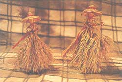

SUNDAY AFTERNOON
Wheat weaving is as old as farming, and a heck of a lot easier. If you can braid hair or tie an overhand knot, you'll be weaving in no time. Because I grow wheat right in back of my house, I've had plenty of experience making wheat handcrafts for a long time now. "Corn dollies;" which were designed over a century ago, are probably my favorite crafts project. For years, people have given these wheat-made figures to friends and family members during harvest time - they were originally created to represent the gods of harvest. (In Europe, corn once referred to all grains; "dolly" comes from the word "idol.") I've certainly given my own share of dollies as gifts, and I've saved several for myself, too. I love knowing that woven into each of these figures is a history as rich as the fields in which the grain grew. And now I pass the tradition onto you:
The first step to making a corn dolly is choosing the wheat you'll use, and there are some basic rules to follow. You should select long wheat stalks that stand erect and straight (stalks should measure more than 18 inches from the base of the head to the first joint on the stalk), and the stem of your stalk should be slender and golden. The stalks in the prime of ripeness are those that are most golden; avoid any stocks with green, which will never ripen to golden.
Just before you start your project, temper the stalks by soaking them for 20 to 40 minutes in cool to lukewarm water. Don't use hot water, which will remove the natural shine and gloss of the wheat. After soaking, wrap the stalks in a wet bath towel and let them set for about 15 minutes or so. The stalks are then ready for weaving, and you can use the wrapped straw all day long (or at least until it gets soggy).
There are a few different techniques used in wheat-weaving. The one that you will be using is called "weaving around a base." This creates a thick spiral of wheat with a hollow center - the hollow core's size depends upon the size of the dowel used. The design is made by working the wheat around a removable dowel core (or a core of "waste" wheat stems). You should probably start with a pencil-size dowel; then, as your fingers get better at weaving, you can move on to a larger size.
Now you're ready to begin. Take five pieces of straw with heads, and 20 to 30 more stalk stems. Tie the five pieces (with heads) around your dowel, making the tie as close to the wheat heads as possible with the clove hitch knot (see illustration). Bend each stem in a 90 degree angle, so that one head points in each direction. (Think of the north, south, east, and west points on the compass.) This arrangement will leave one extra straw that you'll aim just to your left, assuming you are sitting south of the compass.
Start with the extra "beginner" straw pointed toward you (the one just to the left of the south stem) and bend it up parallel to the dowel. Then bend it to the right over two wheat stems. If you're thinking compass: your first bend will be over the south and east stems.
Now, turn the dowel 90 degrees (a 1/4 turn) clockwise. The east stem will now become the south stem. Take your new south stem and bend it over two more stems. Again, turn the dowel 90 degrees, and repeat the process. It will take five bends to complete the circle, and you'll continue building up circles one on top of the other. It won't be long before you'll reach the end of a stem and run out of straw. Simply join another straw stem into the "run-out" one. To do so, cut the small end of a stem (the end nearest the top) at an angle and then slip this end into the larger, hollow end of the used-up stem. Try to use only one of these for each round around the dowel or it will weaken the spiral.
When you've made the size dolly you want, simply tie off the ends with a brightly colored ribbon or another piece of straw. Add the finishing touch by joining heads into the weave, which will leave you with straw heads at both the top and bottom of your weave.
|
 Corn dollies were originally designed to represent the harvest gods. |
|
|